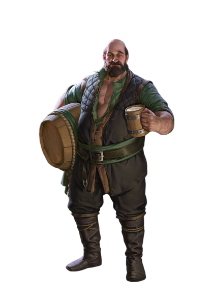

Trecho
ESTAS SÃO AS HISTÓRIAS DE UM POVO INCANSÁVEL QUE, há muito tempo, saiu aos mares e rios em longos navios, primeiro para saquear e aterrorizar, em seguida para colonizar. No entanto, havia uma energia, um amor pela aventura, que foi cantado em cada página. Noite adentro Liriel leu, iluminada pela luz de velas após velas. Ela nunca tinha dado muita atenção para os humanos, mas essas histórias à fascinavam. Naquelas páginas amareladas estavam os contos de heróis corajosos, animais estranhos e ferozes, primitivos deuses poderosos e uma magia que era parte e dava forma àquela terra distante. – Elaine Cunningham, Filha dos Drow
Nos confins da maioria dos mundos, os humanos são a mais jovem das raças comuns, chegando mais tarde no cenário mundial e com uma vida curta, se comparados aos anões, elfos e dragões. Talvez seja por causa de suas vidas mais curtas que eles se esforcem para alcançar o máximo que podem nos anos que têm. Ou talvez eles sintam que têm algo a provar às raças mais antigas, e é por esta razão que eles constroem seus poderosos impérios através da conquista e do comércio. O que quer que os motive, os humanos são os inovadores, os realizadores e os pioneiros dos mundos.
Um Amplo Espectro
Com sua propensão para a migração e conquista, os humanos são fisicamente mais diversificados que as outras raças comuns. Não há um humano típico. Um indivíduo pode ter entre 1,65 metro a 1,90 metro de altura e pesar entre 62,5 kg e 125 kg. Os tons de pele podem variar do negro ao muito pálido, e os cabelos podem ir do negro ao loiro (encaracolado, crespo ou liso). Homens podem possuir pelos faciais esparsos ou abundantes. A diversidade dos humanos pode ter uma pitada de sangue não humano, revelando indícios de elfos, orcs ou outras linhagens. Os humanos chegam à idade adulta no fim da adolescência e raramente vivem um século.
Variados em Tudo
Os humanos são os mais adaptáveis, flexíveis e ambiciosos entre todas as raças comuns. Eles têm amplos e distintos gostos, moralidades e hábitos nas muitas diferentes regiões onde eles se instalaram. Quando se estabelecem em um lugar, eles permanecem: eles constroem cidades que duram por eras, e grandes reinos que podem persistir por longos séculos. Um único humano pode ter uma vida relativamente curta, mas uma nação ou cultura humana preserva tradições com origens muito além do alcance da memória de qualquer um dos humanos. Eles vivem plenamente o presente – tornandoos bem adaptados a uma vida de aventuras – mas também planejam o futuro, esforçando-se para deixar um legado duradouro. Individualmente e como grupo, os humanos são oportunistas adaptáveis, e permanecem alerta às dinâmicas mudanças políticas e sociais.
Instituições Duradouras
Onde um único elfo ou anão pode assumir a responsabilidade de proteger um local especial ou um poderoso segredo, os humanos fundam ordens sagradas e instituições para tais fins. Enquanto clãs anões e anciões halflings passam as antigas tradições para cada nova geração, os templos, governos, bibliotecas, e códigos de lei dos humanos fixam suas tradições no alicerce da história. Os humanos sonham com a imortalidade, mas (exceto aqueles poucos que procuram a não-vida ou a ascensão divina para escapar das garras da morte) somente alcançam-na certificando-se que serão lembrados depois que partirem.
Embora alguns humanos possam ser xenófobos, em geral suas sociedades são inclusivas. As terras humanas dão as boas-vindas a um grande número de raças não humanas em comparação com a proporção de humanos que vivem em terras não humanas.
Exemplo de Ambição
Os humanos que buscam aventura são os mais ousados e ambiciosos membros de uma ousada e ambiciosa raça. Eles buscam ganhar glória aos olhos de seus companheiros ao acumular poder, riqueza e fama. Mais do que as outras raças, os humanos defendem causas, em vez de territórios ou grupos.
Nomes e Etinias Humanas
Possuindo muito mais diversidade do que outras culturas, os humanos como um todo não possuem nomes típicos. Alguns pais humanos dão nomes de outras línguas aos seus filhos, como nomes anões ou élficos (pronunciandoos mais ou menos corretamente), mas a maioria dos pais humanos dá nomes que estão ligados a cultura da sua região ou os nomes tradicionais de seus antepassados.
A cultura material e as características físicas dos humanos podem mudar muito de região para região. Nos Reinos Esquecidos, por exemplo, o vestuário, a arquitetura, a culinária, a música e a literatura dos humanos são diferentes nas terras do noroeste das Fronteiras Prateadas, daqueles da distante Turmish ou Impiltur, ao leste – e até mesmo mais distintas na longínqua Kara-Tur. As características físicas dos humanos, no entanto, variam de acordo com as antigas migrações dos primeiros humanos, de modo que os humanos das Fronteiras Prateadas possuem todas as variações possíveis de coloração de pele e características.
Nos Reinos Esquecidos, nove grupos étnicos humanos são amplamente reconhecidos, apesar de mais de uma dúzia de outros serem encontrados em áreas mais específicas de Faerûn. Esses grupos, e os nomes típicos de seus membros, podem ser usados como inspiração independente de qual mundo seu humano faz parte.
Traços Raciais dos Humanos
É difícil fazer generalizações sobre os humanos, mas seu humano possui as seguintes características.
Aumento no Valor de Habilidade.
Todos os seus valores de habilidade aumentam em 1.
Idade.
Os humanos chegam à idade adulta no final da adolescência e vivem menos de um século.
Tendência.
Os humanos não possuem inclinação a nenhuma tendência em especial. Os melhores e os piores são encontrados entre eles.
Tamanho.
Os humanos variam muito em altura e peso, podem ter quase 1,50 metro ou mais de 1,80 metro. Independentemente da sua posição entre esses valores, o seu tamanho é Médio.
Deslocamento.
Seu deslocamento base de caminhada é 9 metros.
Idiomas.
Você pode falar, ler e escrever Comum e outro idioma adicional, à sua escolha. Os humanos normalmente aprendem os idiomas dos povos que convivem, incluindo dialetos obscuros. Eles gostam de rechear seu discurso com palavras emprestadas de outras línguas: xingamentos orcs, expressões musicais élficas, frases militares anãs e outros.